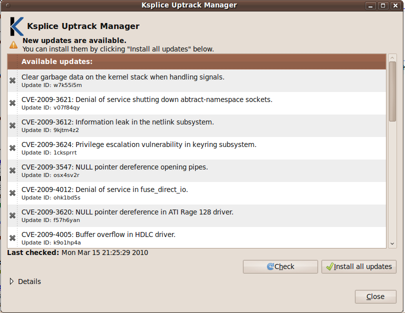

Abstract: Ksplice applies kernel patches on-the-fly -- no reboot required -- in a fraction of a second. Here's a hands-on guide to performing painless system updates.
Unix machines run and run (and run). A desktop or portable system can be left on for weeks, even months, and server uptime can stretch to a year or more. Indeed, if you could preclude hardware failures and Mother Nature, a Unix system might run perennially. Alas, hardware is imperfect; Mother Nature has a mind of her own; and software suffers from bugs, too. Gear requires replacement. Storms happen. And systems require patches and restarts. Much like death and taxes, downtime is a certainty.
However, unlike death and taxes, you can minimize downtime. Proactive and regular system maintenance and hot spares boost availability, as does a robust data center replete with backup power and redundant connections to the Internet. Thankfully, too, most applications and libraries can be updated seamlessly and on-demand using tools such as rpm, Aptitude and yum.
Unfortunately, kernel updates -- modifications to address vulnerabilities and flaws in the core system software -- aren't so painless. A kernel update is very disruptive, requiring scheduled downtime to temporarily halt all services on each and evert machine affected and reboot each one. While such upkeep is necessary and vital, keeping pace with kernel updates can nonetheless make operations something akin to a yo-yo. To wit, the timelines in Figure 1 shows the frequency of critical kernel updates for a number of popular operating systems between January 2009 and February 2010. Each cycle icon represents a mandatory restart. (Figure 1 provided courtesy of Ksplice, Inc.)
But now, you can patch your kernel as it runs, eliminating the otherwise wholesale interruption caused by a restart. In other words, scheduled upgrades no longer need a schedule. Ksplice is a set of tools to patch the kernel in situ, as it's running -- no reboot required. Given an existing kernel, its source code, and one or more unified diffs (a unified diff is the canonical form for kernel patches), Ksplice replaces existing, errant object codein the kernel with new object code. Ksplice can replace both program code and data structures. Better yet, a kernel splice interrupts normal system operation for a mere fraction of a millisecond, leaving daemons, processes, and connections intact.
Let's look briefly at how Ksplice works and learn to use its tools to keep a kernel up-to-date. There are three ways to use Ksplice: via a graphical user interface; via equivalent, high-level command-line utilities; and, if you have the source to your kernel, via the raw Ksplice tools. An Ubuntu 9.04 or Ubuntu 9.10 user, for example, can download and install a point-and-click application to choose and apply kernel modifications. All three variants of Ksplice are introduced here.
Put succinctly and simply, Ksplice patches a running kernel by replacing one or more vulnerable or faulty functions with newer, correct implementations. To effectuate the substitution (again, oversimplifying for the moment,) the tool amends a running kernel image with the new functions' object code and injects a jump at the head of each existing function to call its new counterpart. Virtually the entire kernel remains unchanged, save for the new object code and a few instructions to redirect the function calls.
Additionally, Ksplice can affect data structures, albeit with a little extra programming. Ksplice can run code during an update to facilitate such a change. Ksplice also provides a pair of hooks to run setup and teardown code immediately before and immediately after the kernel is updated. You can also add new functions to augment the kernel. New functions simply have no counterparts in the original kernel.
Ksplice can be applied to virtually any kernel, even those that shipped before Ksplice was developed. To splice a kernel, you must have its source code, the set of patches you want to apply, and a compiler capable of isolating each function and data structure in the kernel in its own section in the object code. For example, the GNU Compiler Collection (gcc) provides flags -ffunction-sections and -fdata-sections, respectively, for those exact purposes. (Other compilers, such as the Intel C Compiler, also have similar capabilities.) Such "modular" object code is more easily manipulated by Ksplice. The running kernel to be patched need not have been compiled with the same special options.
Ksplice refers to the kernel compiled from the original source as the pre kernel. The new kernel built from the patched source is the post kernel. And the running kernel is nicknamed the run kernel. Ksplice fails if pre is not the same as run, a clear indication the source code does not match the running kernel. Apart from that special condition, Ksplice compares pre to post and each difference becomes a splice. All splices are bundled into a single object file ready to be injected into the kernel.
Ksplice uses the stop_machine feature (or its equivalent, depending on your flavor of Unix) to prepare to splice new code. Think of stop_machine as a traffic signal: it allows a sole CPU to proceed while idling all others. After executing stop_machine, Ksplice analyzes each function marked for replacement to determine if it is active or not. If even a single thread's instruction pointer refers to a function's code in memory or a single thread's kernel stack refers to a return address within the function, the function is considered active and cannot be replaced. Otherwise, the function is deemed inactive and is replaced. Ksplice tries repeatedly to make a replacement but may ultimately abandon the effort. If so, it reports an error and stops.
If you run one of the more popular Unix distributions, Ksplice couldn't be easier to use. The authors of Ksplice provide a client application customized for your distro. You can keep your kernel up-to-date for a nominal fee of less than five dollars per system per month. You can find a list of supported operating systems on the Ksplice Web site. The Ksplice software is available free of charge for Ubuntu 9.04 ("Jaunty Jackalope") and Ubuntu 9.10.
For demonstration purposes, let's use Ubuntu and splice its kernel. To use Ksplice on Ubuntu, you must download and install the Ksplice "Uptrack" client. Uptrack manages the rebootless kernel updates available for your system. You can view and install Ksplice updates and you can review alerts when new kernel updates are available. Point your browser to http://www.ksplice.com/uptrack/download and download the Uptrack software suitable for your system. The software is provided as a Debian package. (You can also download the software from the command-line using a tool such as wget or curl.)
Next, use gdebi to install the package. If you do not yet have gdebi, you can install it with the command sudo apt-get install gdebi. (If you prefer a graphical client, you can install Ksplice with the command sudo gdebi-gtk ksplice-uptrack.deb.) gdebi installs Uptrack and its dependencies, which include kerneloops, the YAML library, Python, and the CURL library.
$ wget http://www.ksplice.com/uptrack/dist/karmic/ksplice-uptrack.deb $ sudo gdebi ksplice-uptrack.deb Reading package lists: Done Reading state information: Done Reading state information: Done Reading state information: Done Reading state information: Done Requires the installation of the following packages: kerneloops curl libcurl3 python-yaml libyaml-0-1 Client for the Ksplice Uptrack service The Ksplice Uptrack service enables you to keep your system up to date and secure without rebooting it. This package contains the command-line and graphical Uptrack clients. Do you want to install the software package? [y/N]:y ...
After you accept the terms of service and the install finishes, Uptrack launches automatically. The installer also places a Ksplice icon -- a large letter "K" in the task bar -- for easy access. Figure 2 shows the Uptrack Manager launching for the first time on a clean install of Ubuntu 9.10. To patch the kernel, click Install All Updates.

A progress bar, shown in Figure 3, echoes each patch as it is installed. Patching the kernel takes less than a few seconds, even when a good number of patches are outstanding. And, of course, no reboot is required.

When finished, the Uptrack Manager refreshes to show you the new state of your system, as shown in Figure 4. A green check mark indicates the named patch was applied successfully and is now live in your running kernel. Click on the button labeled Check to look for additional kernel patches available for your system. Click Close to dismiss the window. It is not necessary to run uptrack-manager as root; the software prompts for an administrator's password before any modifications are applied.

You can open Uptrack any time later with the command uptrack-manager or click on the "K" icon in the taskbar. Ksplice runs continuously once launched. If you prefer, you can configure Ksplice to apply patches to the running kernel automatically or just alert you when updates become available. For example, to choose the former, edit the file /etc/uptrack/uptrack.conf and change the autoinstall line to read:
autoinstall = yes
In addition to update-manager, Uptrack includes three other command-line utilities for convenience (these utilities are different than the tools used to work with kernel source directly, which are demonstrated in the next section). uptrack-upgrade installs the latest available kernel updates. uptrack-remove id removes the kernel update tagged with ID id. If you type uptrack-remove --all, uptrack-remove purges all installed updates. uptrack-show shows a manifest of updates that are currently installed.
It is essential to remember that Uptrack does not usurp the role of your distribution's standard package manager. All changes made by Ksplice are applied to the running kernel and exist in memory only. Therefore, all Ksplice patches are lost upon shutdown. Continue to update your kernel on disk with a traditional software maintenance procedure, such as running apt-get update; apt-get upgrade as root on a regular basis or when your distribution informs you of new system updates. Keeping the kernel on disk up-to-date ensures that your system boots the best kernel available when your system eventually requires a restart.
Uptrack Manager is a convenient option for desktop and server computers based on kernels built and distributed by a vendor or a community project. It won't work, though, if your kernel is customized and built locally, because Uptrack cannot compare your kernel to a known, published operating system to generate splices. However, you can use Ksplice's "primitive" utilities to analyze public patches and create your own splices.
Describing how to build a kernel is beyond the scope of this article. If you're unfamiliar with the process, there are excellent instructions and a good number of satisfactory tutorials scattered across the Internet. Instead, let's focus on the tools Ksplice provides and how to proceed once you are able to build any kernel.
Ksplice provides a utility named ksplice-create to create kernel splices. The command requires two inputs: a patch file and the entire source tree for the running kernel, including any previous patches that have already been applied. Given the current source code and the patches, Ksplice generates two kernels, as mentioned above, and compares the revision to its original. The output of ksplice-create is a splice that can be applied with ksplice-apply. You can redact a splice from the kernel with ksplice-remove.
Here is an example (taken from the authors' academic paper and used with express permission) that creates an update for the "prctl vulnerability", CVE-2006-2451, using a patch file called prctl and a kernel source directory ~/src:
$ ksplice-create --patch=prctl ~/src Ksplice update tarball written to ksplice-8c4o6u.tar.gz $ sudo ksplice-apply ./ksplice-8c4o6u.tar.gz Done!
The former command generates a tarball of object code, ksplice-8c4o6u.tar.gz, to be patched into the kernel. The second command reads the tarball, calculates the renovations required, and applies the splice.
Ksplice is a proven technology. According to the authors' original paper and technical study, Ksplice was able to dynamically patch the Linux kernel with all security and functional patches issued between 2006 and 2008. Of those, more than two-thirds required no special code to update the kernel. Of the remaining patches, special programming amounted to an average of 17 lines of code per patch.
Linux was chosen to prove the Ksplice approach. The Linux source is widely and frequently vetted for flaws, and is patched often to quickly address shortcomings. However, Ksplice can readily be adapted to any kernel where source code is available, including BSD and Solaris. Ksplice supports x86, x86_64, and ARM processors, too.